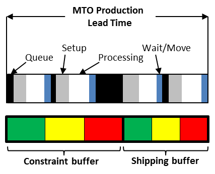

буфер ограничения (constraint buffer) - смещение буфера времени, используемое для планирования выпуска материалов, которые питают ограничение.
Использование: Если ограничение существует в производстве, буфер ограничения и буфер доставки (а иногда и буфер сборки) используются для защиты вывода системы. Если ограничение присутствует на рынке, буфер ограничения не нужен, и используется только буфер доставки. Буфер ограничения не используется в упрощенном барабане-буфере-веревке. Размер буфера ограничений задан таким образом, чтобы значительно снизить вероятность того, что изменение в системе до ограничения приведет к «истощению» ограничения, (т. е. не иметь того, что необходимо для удовлетворения потребительского спроса), но не приведет к чрезмерным запасам незавершенного производства.
Перспектива: подход TOC к буферизации ограничения является основным отличием от многих других подходов к управлению производством. Это различие важно, потому что, если есть ограничение в операциях, этот буфер позволяет системе более полно использовать это ограничение, тем самым увеличивая пропускную способность.
Иллюстрация: буфер ограничения для производственной ситуации на заказ показан ниже:

См .: буфер, управление буфером, буфер доставки.
#ббк
учет ограничений (constraints accounting)
Синхронизация: учет пропускной способности.
Синоним: constraint buffer